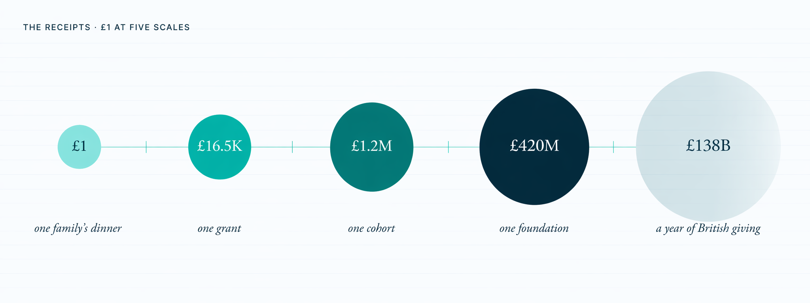
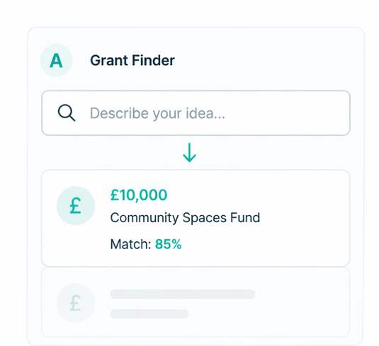
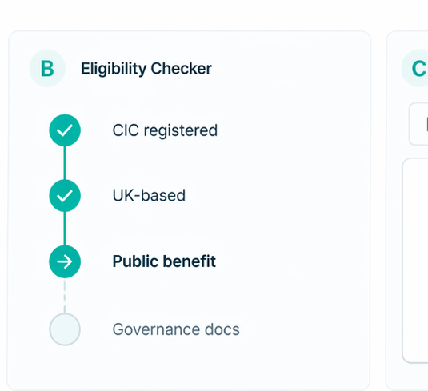
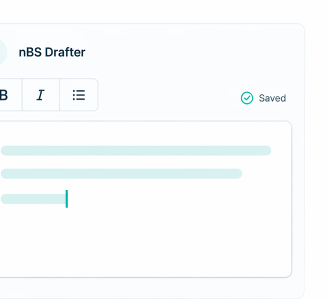
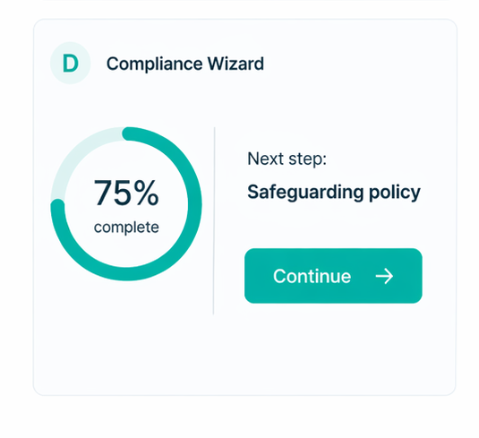
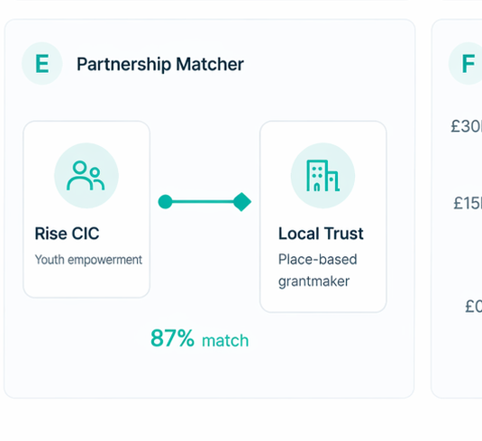
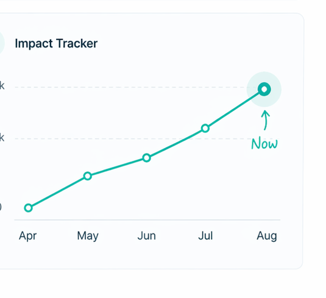

We help underrepresented founders and community orgs get funded and get online — then put our tools out in the open.
They stood on other people's shoulders and called it climbing. We stopped lying. Every CIC, charity, and community-run business on this network got here because somebody helped — and we're here to be the next helper in your line.
You don't need to know what you need. Any of these will move you forward.
From one family's dinner to every pound the UK gives to charity in a year. Same £1 — very different stories, depending on how far back you stand.

As you type, we check three things: can you apply, is the idea strong, and will it get funded? Grants that match appear below as you go.
Typing isn't for everyone. Hold the button and talk — we'll listen, write it down, and find the grants for you.
Three questions, sixty seconds. We give you a quick read — Explorer, Practitioner, Architect, or Native — then send you to the full test at aiq.inclusifund.co.uk with your answers already saved.
Hover any card to see the tool in action. Click to open it at tools.inclusifund.co.uk.






Five quick screens. Pick what matters to you, watch the numbers rearrange, grab a one-page PDF, book a twenty-minute call. No sales deck.
Three minutes. Five frames. Then you'll know if we're worth the call.
Toggle the impact metrics you care about. Frame 3 redraws to match.
We'll bring the data. You bring the questions. If it's not a fit, we'll say so by minute nine.
book via cal.com →